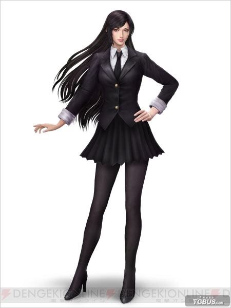

人物介绍③：妍月留梨
原本她不应该能有这么多戏份的。原本设计她时她连配角都算不上，只是个龙套，但是写着写着，她就随着剧情变成了女主角儿了。真可谓是跑龙套草根发家的楷模……
所以，她的名字起的很随意。日本应该是没有妍月这个姓氏的，而留梨……是琉璃的谐音。考虑到琉璃这个名字已经烂大街了，所以我换了字。
父母都是日本人，但她小时候在东普鲁士长大，后来东普鲁士变成了俄罗斯的领土。后来跟着父母回了日本，后来日本又变成了布国的领土。所以她熟练掌握德语俄语日语英语4门语言。
身份设定是全科医生，在普通外科的水平领域的最高。医术是人类医师级，达不到巫师那种起死回生的境界。（通俗点说就是没有外挂）
双性恋，但更愿意接受男人，但她喜欢主角并不是因为性别原因。沙耶子靠才华吸引她，爱尔娜靠感觉吸引她（说不上哪里特别好，但在一起就觉得特别舒服）。在和沙耶子分开的7年中，她以找男人为主。（肉麻点说就是：我不是同性恋，但我喜欢的那个人恰好是我的同性）
1990年九月生，比爱尔娜大三个月。身高173，体重49KG
因为人物没有什么显著特色（亚洲人，黑发黑瞳），缺乏二次元属性，又没有原型，所以没找到合适的人设图
次日更新，找到个一个没什么特色的亚洲人的图，看着像是三国无双里的谁，就她了吧。
.